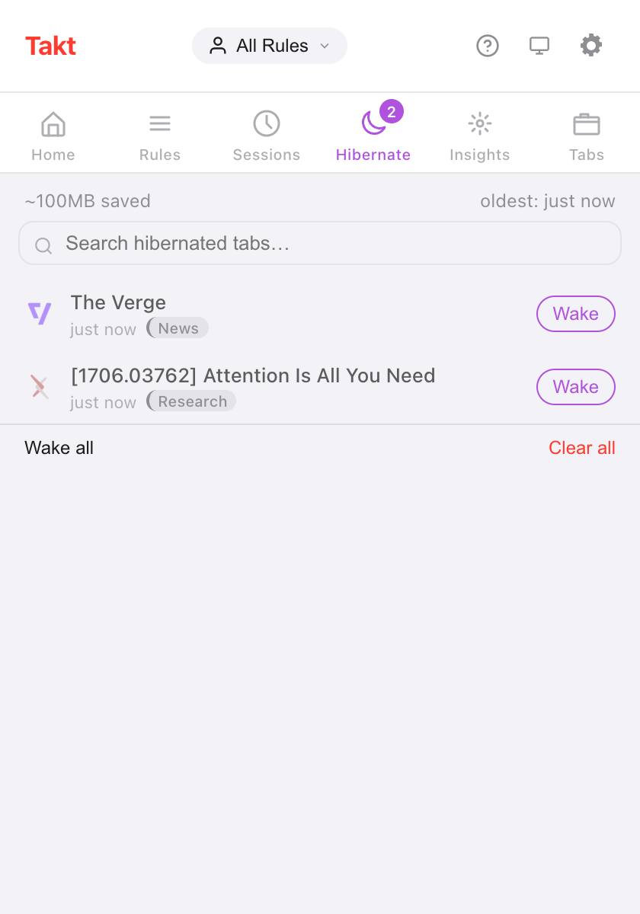

Short answer: Takt manages idle tabs in two stages. Suspend unloads a tab but leaves it in the tab strip. Hibernate closes it and saves its state so one click brings it back.
- Free: auto-suspend after 15 minutes to 4 hours idle, a never-suspend list, and manual hibernation of up to 5 tabs.
- Premium: automatic hibernation by idle time, by tab count per window, or when a schedule ends, and up to 200 hibernated tabs.
- Everything stays on your device. No account, no analytics.
What's the difference between suspending and hibernating a tab?
Both free memory. They differ in where the tab goes.
| Suspended | Hibernated | |
|---|---|---|
| Tab strip | Stays, greyed out | Gone, listed in Takt's Hibernate pane |
| How | Chrome's own tab discard | Tab closed, state saved by Takt |
| Coming back | Click the tab; the page reloads | Click Wake; the tab reopens where it was |
| Manual | Discard advisor (Premium dashboard) | Free, up to 5 tabs |
| Automatic | Free | Premium |
How do I hibernate a tab by hand?
- Install Takt from the Chrome Web Store.
- On the tab you want to put away, open the Takt popup and click Hibernate Tab. Or right-click the page and choose Hibernate this tab.
- The tab closes, and Chrome shows a short "tab hibernated" notification.
- To bring it back, open the popup's Hibernate pane and click Wake.
Takt saves the URL, title, favicon, group name and color, window, position in the window, pin state, scroll position and the time you hibernated it. Wake reopens the tab in its window, at its old position, back in its group, scrolled to where you were.
If the same URL is already open, Takt asks before waking, so you don't end up with a duplicate.

The "~100MB saved" figure is a flat estimate: Takt counts 50 MB per hibernated tab. It doesn't measure the tabs it closes.
How do I unload idle tabs automatically?
Auto-suspend is free and on by default. Every 5 minutes, Takt unloads tabs that have been idle longer than your threshold: 15 minutes, 30 minutes (the default), 1, 2 or 4 hours. Set it in Options → Settings → Tab Lifecycle.
Idle means time since the tab was last active or last finished loading. Takt never suspends:
- the active tab, or a tab that is still loading;
- tabs playing audio;
- pinned tabs;
- tabs that match your Never suspend these tabs list.
The never-suspend list takes one pattern per line, with * as a wildcard. *://mail.google.com/* keeps Gmail loaded. The list also protects tabs from every automatic hibernation trigger below.

Can Chrome hibernate tabs automatically? Premium
With Premium, Takt has three triggers:
- Idle time. A tab that is already suspended and idle beyond your delay is hibernated. Choose from 5 minutes to 7 days; the default is 2 days.
- Tab limit. When a window goes over your limit (15 to 100 tabs, default 30), Takt hibernates its least recently used tabs until it's back at the limit. Close a tab and the most recently hibernated one comes back into that window. Each window is counted on its own.
- Schedule end. A profile schedule can hibernate all eligible tabs when its hours end. Turn on Hibernate tabs when schedule ends in Profiles.
For the idle and tab-limit triggers, Chrome shows a notification with an Undo button for 10 seconds. After that, the tab still waits in the Hibernate pane.
Is this another Great Suspender?
Fair question. In 2021 Google removed The Great Suspender after malicious code was found in a version released after it was sold. Many people stopped trusting tab suspenders after that.
Here is what Takt does differently, and what you can check:
- Suspended tabs keep their real URL. Takt calls Chrome's own discard function. It doesn't swap your page for an extension page, so uninstalling Takt leaves your tabs as they are.
- Hibernated tabs stay on your device. The records live in Chrome's local storage. They only leave your machine if you set up Drive or folder sync yourself.
- No account, no analytics, no telemetry. Extra permissions are optional and requested only when a feature needs them. See how Takt keeps data local.
You still have to trust whoever ships updates to any extension you install. Read the permissions it asks for.
Is Chrome's Memory Saver enough?
Often, yes. If all you want is for background tabs to stop using memory, Chrome's built-in Memory Saver costs nothing and needs no extension.
Two complaints come up again and again: tabs reload when you return to them, and some inactive tabs never go to sleep. Takt's suspend step has the first trade-off too. A suspended tab reloads when you click it, because it is the same kind of discard.
What Takt adds is control. You pick the idle threshold, you list the sites it must never touch, and hibernation takes tabs out of the tab strip completely while keeping a way back.
What are the limits?
| Free | Premium | |
|---|---|---|
| Auto-suspend and never-suspend list | Yes | Yes |
| Manual hibernation | Yes | Yes |
| Hibernated tabs at a time | 5 | 200 |
| Auto-hibernate by idle time, tab limit or schedule | No | Yes |
Pinned tabs and tabs playing audio can't be hibernated. When you reach your limit, Takt refuses to hibernate more until you wake or clear some.
Put a tab to sleep. Wake it exactly where you left it.
Add Takt to Chrome, freeFAQ
What is the difference between suspending and hibernating a tab?
A suspended tab is unloaded but stays in the tab strip and reloads on click. A hibernated tab is closed; Takt saves its state and reopens it when you click Wake.
How many tabs can I hibernate for free?
5 at a time on the free plan, 200 on Premium ($3/month or $30/year). Auto-suspend has no limit and is free.
Is Takt another Great Suspender?
Takt suspends with Chrome's own discard, so tabs keep their real URL. Hibernated tabs stay in local storage on your device. No account, no analytics, no telemetry.
Do hibernated tabs survive a browser restart?
Yes. They are stored on disk, not in memory. On startup Takt drops any record whose URL is already open again.